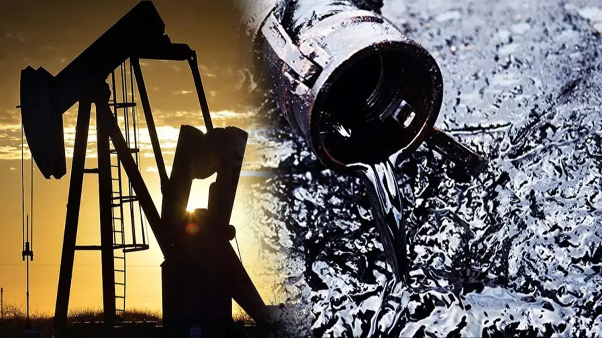
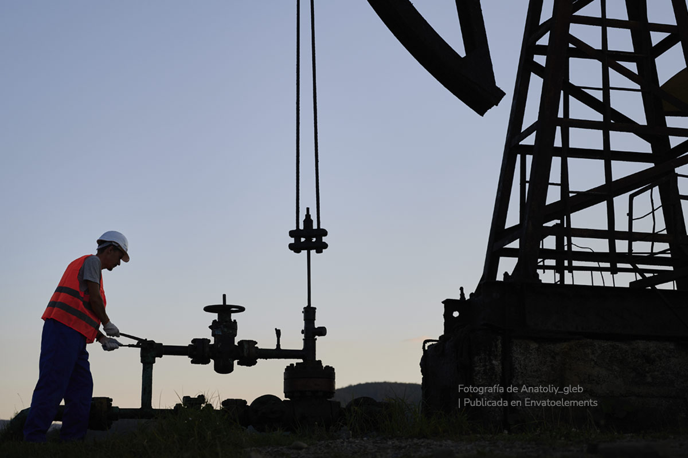
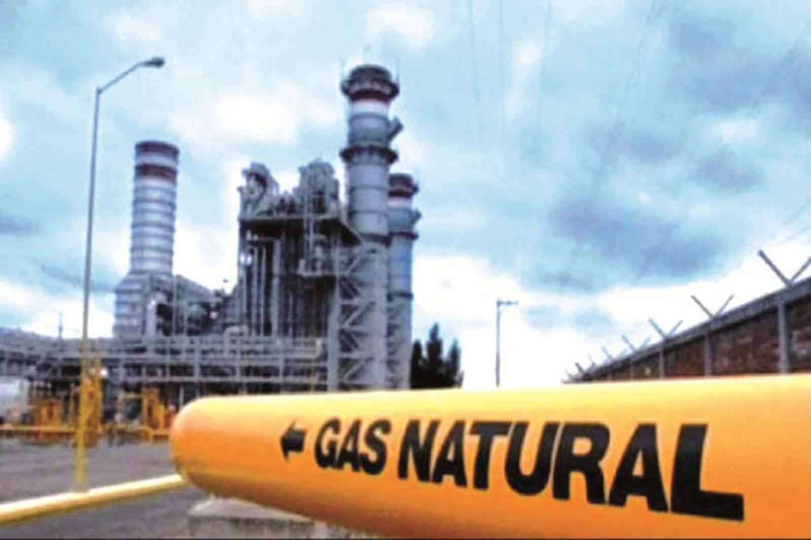
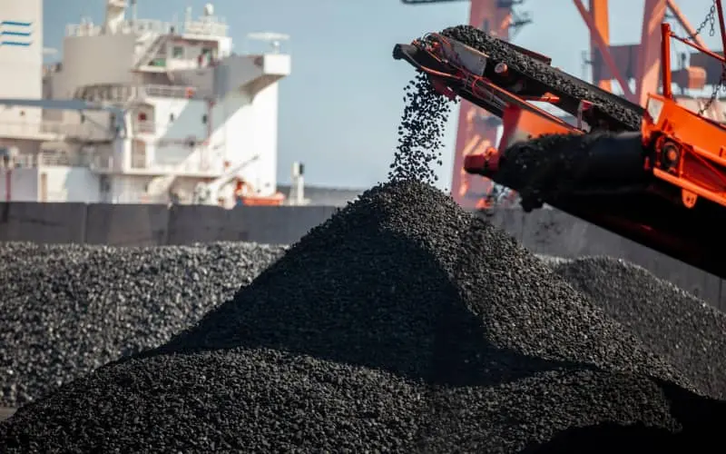
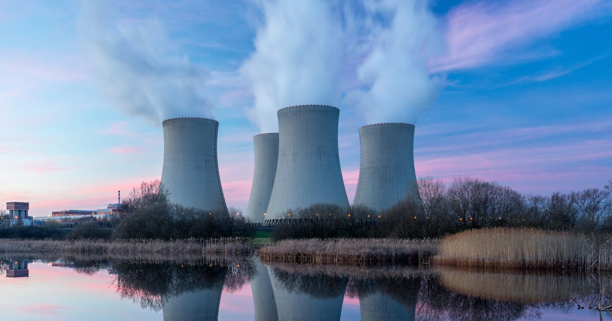
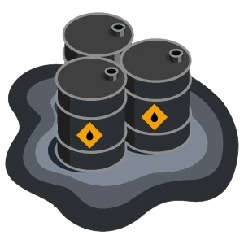

Conoce su impacto y busca alternativas sostenibles
La energía fósil es la energía que proviene de la combustión de combustibles fósiles, también conocidas como energías no renovables.
En la actualidad, el desarrollo económico y tecnológico de las sociedades modernas depende en gran medida del acceso a fuentes de energía. Sin embargo, gran parte de esta energía proviene de recursos no renovables, como el petróleo, el gas natural, el carbón y el uranio. Estos recursos se formaron a lo largo de millones de años mediante procesos geológicos y biológicos, y su disponibilidad es limitada. A medida que se extraen y consumen, se acercan a su agotamiento, lo que plantea serios desafíos para la sostenibilidad del planeta.
Las energías no renovables han sido fundamentales para impulsar la Revolución Industrial, el transporte global, la producción de bienes y el confort en los hogares. No obstante, su uso intensivo ha generado consecuencias ambientales significativas, como la emisión de gases de efecto invernadero, la contaminación del aire y del agua, y la generación de residuos peligrosos, especialmente en el caso de la energía nuclear.
A pesar de su eficiencia y capacidad de generar energía de forma continua, estas fuentes presentan un dilema: ¿cómo seguir avanzando sin comprometer el equilibrio ecológico y el bienestar de las futuras generaciones?

Es el combustible fósil más utilizado y es esencial para el transporte, dado que mediante su refinamiento se producen la gasolina y el diésel. EE. UU. es el mayor consumidor de petróleo, aunque su uso está muy repartido entre todas las economías desarrolladas del planeta.

Los depósitos de gas están muy ligados a los de petróleo y están formados, principalmente, por metano. Una vez procesado, el gas se utiliza principalmente para calefacción y cocina, así como para usos industriales. EE. UU. y Rusia son los mayores consumidores.

Fue el primer combustible fósil en explotarse. Hasta 1900, el uso del gas y el petróleo era inexistente. Hoy todavía se consumen 44.500 teravatios-hora de energía generada con carbón. La mitad, en China. Los principales tipos de carbón son turba, lignito, hulla y antracita.

Se usa en la industria para calentar agua, mover generadores y producir electricidad. Proviene de la reacción de átomos como el uranio. Es peligrosa, pues un fallo puede generar radiaciones muy dañinas.
Actualmente, las energías no renovables siguen siendo la principal fuente de energía utilizada a nivel mundial.
Esto se debe a su alta densidad energética, su fácil transporte y almacenamiento, así como a la infraestructura existente para su uso.
Los combustibles fósiles, en particular, son ampliamente utilizados en la generación de electricidad, la industria, el transporte y la calefacción.
...
Las energías no renovables han sido fundamentales para el desarrollo y progreso de la humanidad.
Han impulsado la industrialización, el crecimiento económico y han satisfecho la creciente demanda energética a nivel global.
Sin embargo, su uso excesivo ha traído consigo una serie de problemas y desafíos que no podemos ignorar.
Las siguientes son las ventajas más destacadas de las fuentes de energía convencionales:
En cuanto a los inconvenientes de los recursos no renovables, cabe citar:

Al ritmo actual de consumo mundial, los recursos fósiles se están agotando. Las estimaciones indican que restan aproximadamente: